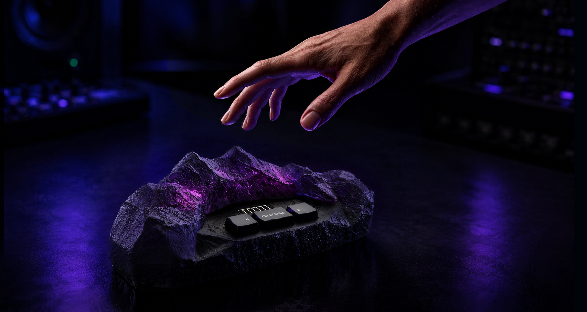

Played in the air. Trusted through the software.

Quray is a touchless music controller: ten sensors track your hands in the air and turn movement into MIDI and CV, control signals for synthesizers and modular systems. The hardware was already impressive. The software experience wasn't.
Quray is still in progress, so I do not want to pretend the story is closed. This case study shows the decisions that moved the product from a developer interface to a working prototype. The next update will come from user testing.

Overview
Overview
When I joined, Quray was not an idea on paper. The hardware had already been shown at Superbooth Berlin and was impressive enough to get attention. But the software had not caught up with the instrument yet.
The interface was only the visible symptom. The real work was defining the system behind it: how invisible gesture, preset logic, and device state stop being separate technical pieces and start behaving like an instrument.
Quray was already strong as hardware. The work was to make it understandable as a product.


The Challenge
The Challenge
Quray is played in empty air, and nothing about that is visible. The device has buttons and a screen for stage navigation, but the actual playing surface has no physical edges. Users can't see the field and can't tell whether their movement is being tracked. And because Quray is a controller, not a synthesizer, it makes no sound on its own. A new user can do everything right and still hear nothing.
The audience made the problem harder. They have watched too many expressive controllers arrive as impressive hardware and then leave buyers alone with software that made no sense. So they are skeptical for good reasons. If the logic is vague, they notice immediately, and they expect control when the product touches their setup.
There is nothing to look at where the music happens. The active field is a volume of air above the device, and zones have no physical edges. Each zone can trigger a note, control a parameter, or send a CV signal, but the user cannot see where the field starts, where one zone ends, or whether their hand is in the right place. The interface had to show the field geometry before asking anyone to configure it.
Quray is a controller, not a synthesizer. It only produces control signals, so the user has to connect external gear and configure the mappings before anything can be heard. That makes the first-use problem harder: silence can mean four different things: nothing connected, wrong mapping, dead synth, lost tracking, and the user has no way to tell which. The software had to show cause and effect on screen instead.
Before Quray can feel playable, the user has to build a mental model: presets contain zones, zones have mappings, mappings route to Note, MIDI, or CV, everything has a save state, and the device has its own memory that doesn't automatically match the browser. None of this can be hidden — this audience needs to see and control the full structure. The structure had to stay visible and inspectable without looking like a settings dump.
The expressive-controller market is a graveyard. Enhancia closed and left users with devices that had no support. ROLI went through bankruptcy and restructuring. The pattern repeats: impressive hardware, a convincing demo, configuration software built like a developer tool, and a buyer left alone in front of complexity. That is how an expressive instrument ends up barely used and resold — what modular forum users have started calling "a very expensive preset machine." The people who buy instruments like Quray have watched this happen repeatedly. Configuration itself was not the issue. Modular users patch complex systems for fun. What frustrates them is software that lets them change values without making the logic, consequences, or device state clear.
The configurator is one half of the product. The other half is the physical device, and the difficult part is the relationship between them: which state lives in the browser, which lives on the device, what the hardware buttons do on stage, and what can actually fit on a monochrome screen mid-performance. I own that whole boundary, including the on-device screen states, which became a separate design challenge in 128 pixels.
I did not come from the music technology world, and in this project there was no way around that. You cannot design a MIDI/CV mapping interface without understanding what a CV voltage range actually does, why V/Oct matters for pitch, or what happens on stage when a preset switches mid-note. So I started there: studied the domain until I could follow forum arguments between modular users, learned how the signal chain works end to end, and talked to musicians, not to validate screens, but to understand how they think. They don't think in settings; they think in sound, gear, and muscle memory. Until I could follow that logic, every design decision would have been a guess.


Left: Original configurator. Right: Editor screen redesign
Cleaning up the interface was the easy part.
Making the instrument make sense — that was the problem.
My Part in This
I'm the sole designer on this project. My work covers the configurator end to end: research, product architecture, interaction design, design system, and the working prototype in code. The scope also includes the product logic between the web app and the physical device: how the browser, the device, and the stage controls work as one system.
Quray looks smaller than the enterprise systems I've designed before, but it belongs to the same category of problem: a technical product with synchronized state, complex logic, and users who cannot afford ambiguity. It is also the project where I rebuilt my workflow around AI, using it to move faster without handing over the product decisions.
I joined the project days before Superbooth Berlin. I couldn't be there in person, so I prepared a field research script for the founders to use at the booth. The point was not to collect polite reactions, but to notice where people stopped understanding the product. The founders ran it during the event, and the results came back as the project's first real user input, including the observation that shaped the onboarding strategy.
I don't come from the music world, so I treated that as the first thing to fix. I started by learning how this world works: MIDI, CV, modular setups, routing, device memory, and the way musicians talk about control. I moved through sources in order of trust: founders' assumptions first as hypotheses, then comparable controllers, then the forums where this audience actually argues.I also talked to musicians directly, not about my screens, but about their world. I wanted to understand what felt obvious to them and completely invisible to me. They were not thinking like SaaS users choosing settings. They were thinking through sound, gear, habits, and what their hands already know. Until I understood the logic of the instrument, the interface would only be a cleaner version of my own guesses.
I used AI seriously here. The domain was too wide to enter slowly: hardware logic, market history, competitor failures, forum language, all at once. AI helped me move through that material fast enough to keep designing.The useful part was not that AI "found answers." It helped me stay in conversation with the material: comparing sources, sharpening questions from forum discussions, stress-testing ideas before spending time on them. When something sounded too neat, I treated that as a warning sign. The final decisions still had to make sense for this hardware and for musicians who would immediately notice if the logic was fake.
I documented decisions while they were still fresh. This project changed quickly and I did not want to invent a clean story afterward. When I changed direction, I wrote down why. When something looked good in the abstract but failed in the prototype, I kept that too. The notes became part of the design process, not a portfolio exercise done at the end.
After locking the visual direction in Figma, I built the configurator directly in code with Cursor: React, a design token system, and a living styleguide. This is the part I would not go back from. Instead of putting a clickable picture in front of musicians, I put something in front of them that behaves.That matters for this project. A static prototype can show the layout, but it cannot show whether the model makes sense once the editor state, sync logic, and device memory start interacting. Building in code made the weak parts visible earlier. It also meant the design system could not drift away from implementation, because the prototype was already using the same components and tokens.
The prototype is now being tested with target musicians. This case study will continue from there. The next part is what I actually care about: where musicians got lost, where they didn't, and what changed because of that.

Research & Discovery
Quray was outside my usual domain, so research was not a formality. The founder's view of the audience was very broad: expressive, visual, open to everyone. That made sense for explaining why the device was exciting, but it was too vague for the configurator. The software had to support a more specific moment: a musician sitting with their own gear and trying to understand whether Quray could become part of their setup.
Every comparable product lost people at the same moment: not at the demo, but afterwards, when the buyer was alone with the software and it started to feel like someone else's internal logic. That's when impressive devices stop being instruments and start collecting dust. I needed to design against that failure pattern, and it changed what I thought I was building.
I did not treat the founders' assumptions as wrong, but I also did not treat them as facts. They became the starting point: reasonable hypotheses, worth testing. I needed to see how the product held up against what this audience already owned, and how it landed with people outside the team's story.The more useful material came from places where musicians were not trying to be polite: ModWiggler, Elektronauts, Reddit, KVR, long reviews, and complaint threads. Competitor research told me what failure patterns to look for. Forum reading showed me what this audience cared enough to argue about.
AI made this research possible at the scale I needed. I used it to move through a lot of unfamiliar material quickly, but only after writing tight research briefs. Each brief had to be specific enough to keep the output close to Quray, whether I was mapping a competitor, an audience segment, or a technical question I needed to understand before designing around it.The difference was in the prompt quality. A vague prompt gave me a polished summary that sounded plausible and was not very useful. A specific brief gave me something I could actually work with. It surfaced disagreements between users, recurring complaints, and promises that looked good in demos but collapsed in real use. AI did not replace the research judgment, but it let one designer cover more ground without pretending the domain was simple.
Not everything survived. Some AI research output drifted toward a generic "gesture controller" mental model, recommending patterns for a product that was not Quray. The most obvious example was wizard-style onboarding: clean, friendly, and completely wrong for an audience that does not want the instrument to hide its logic.I kept the findings that were grounded in real user behavior and discarded the rest. For every rejection, I documented why it did not fit the hardware, the audience, or the way Quray would actually be used. In a niche domain, a generic answer can sound convincing precisely because it is missing the logic of real users. Knowing which answers to throw away was worth more than the speed.
The field script I prepared for Superbooth gave the project its first real audience signal. When people played with the device, the reaction was strong — the hardware created exactly the kind of curiosity Quray needed.That confidence did not survive contact with the existing configurator. When people looked at the interface, the reaction shifted from "I want to try this" to something closer to "just set it up for me." For an expressive instrument, that is a bad place to land.One smaller observation stuck: some visitors moved their hand toward the device expecting depth to control something — Quray tracks a flat field. A natural gesture produced no visible response, so the device felt broken even when it was working. It was the larger product problem in miniature.
The device looked like it could be for almost anyone interested in movement and sound, and research made that framing too soft for the configurator. It also mattered that Quray was not a cheap experimental gadget. The people most likely to configure it seriously were modular synth users and experimental electronic musicians, because they already spend time building their own systems and have a reason to care about CV, routing, and repeatable control.That made the configurator's job clearer. It did not need to make Quray feel accessible to everyone. It needed to feel like a serious tool for people who already understand gear and want control.
One useful correction was that Quray does not have one clean "main user." The website can sell the visual performance value. The physical device has to protect someone on stage. The configurator has to satisfy the person doing the detailed setup before the performance ever happens.That helped me stop forcing every need into one screen. The Library, Device view, and Editor each had to answer a different question, because the user is in a different mode in each place.
The original interface treated CV as something close to an advanced extra, but the research made that feel wrong for the audience Quray needed to reach. For modular users, CV is one of the main reasons Quray is interesting at all, and if it feels vague or hidden, the product immediately loses credibility.That affected the mapping model. CV needed the same seriousness as MIDI, with visible ranges, polarity, and behavior that feels inspectable instead of decorative.
One of the most concrete pain points was the way musicians often have to connect software to hardware. Many synthesizers expose their controls through MIDI CC numbers. In practice, that means the user has to find a synth's implementation chart, look up which number controls the thing they want, type that number into the editor, and then check whether it behaves as expected.That is boring, technical translation work, not creative control. It became one of the strongest arguments for a semantic mapping layer. Instead of asking the user to start with "CC74," the interface can start with "Filter Cutoff" and keep the raw number underneath for people who want it. The power stays available, but the user no longer has to carry the whole translation in their head.
People in this market have seen too much hardware become useless because the software disappeared, stopped working, or never made the device easy to maintain. That changes how you design basic states. "Saved," "synced," and "on the device" cannot be vague labels. They are trust signals.This is why the configurator needed a clear relationship between the browser library and the physical device. A musician should understand whether a preset is only in the web app, already stored on Quray, or still waiting to be synced before they disconnect the computer.
The founder's early audience model included experiential creatives, such as sound-healing practitioners, movement artists, and people interested in the sensory side of sound. They were drawn to the magic of the device, but the research did not support them as a primary audience for an expensive instrument that still required serious configuration.That segment also pulled the product toward a softer and more simplified experience, while the strongest audience needed almost the opposite: visible logic, precise control, and confidence around setup. Removing that segment from the core audience protected the product from being designed around people who might like the concept but were unlikely to become serious users.
A repeated pattern in the research was that musicians do not necessarily want the computer involved forever. Many want to configure the instrument, save the setup to hardware, and then perform without the web app becoming another fragile part of the rig.That made the Device view more than a storage screen. It had to show what is actually loaded on Quray and whether the current device state can be trusted before someone walks away from the computer.

Understanding the Users
Quray did not have one clean user type. At first glance, the product looks like something made for performance: a person moving their hands above an unusual object while the audience sees gesture become control. Research made that picture more complicated. The person impressed by Quray on stage is not always the person who will later sit down and build a preset from scratch.
So I stopped treating the audience as one average musician. The configurator needed to serve the setup work, while the device had to stay safe under performance pressure. The website could still sell the visual magic of the instrument, but the software had to be built for people who would notice immediately if the logic underneath was vague.

The configurator's core audience. Technically literate, used to spending real money on small pieces of gear, and comfortable building systems most people would find unreasonable. Quray interested them because it offered touchless CV control — not because it promised to make music easy.

They overlap with modular users but aren't identical. They're more interested in what Quray can become: strange control, unstable textures, movement that produces something a keyboard or a knob wouldn't. They can tolerate ambiguity, as long as the result is interesting enough to return to.

Often the same modular or experimental users in a different moment. Someone who can tolerate complexity at home cannot tolerate surprise on stage. That distinction changed how I thought about the device: performance needed its own logic, because a live context has different consequences.
"I refuse to buy modules with hidden modes or secret handshake button combo bullshit."
From Research to Architecture
From Research to Architecture
The original configurator did not need another pass of visual cleanup. The deeper problem was that the product model was still missing. Work happened in the browser, but part of that work was supposed to end up on the hardware, and the old interface blurred that line. A musician could build a preset and still have to guess what would survive outside the browser. For a hardware instrument, that is not a small UI problem, but the moment where trust starts to break.
Before committing to screens, I used task flows to put the architecture under pressure. Each flow had a diagram with tables underneath for the behavior the diagram alone could not show: how the interface responds and what the system has to handle underneath. I tested the structure against real scenarios: device disconnects mid-session, a preset has unsynced changes, someone is preparing for a show. If the logic held there, it was worth keeping.
I did not want to lock the product structure from a single sitemap. The first sketch looked plausible, but it still had too many guesses. So I built the architecture through task flows instead.The format became part of the design work. Each flow had one diagram for the user journey, then separate tables for what the interface does, what the system does, how failures recover, and which questions were still open. That separation made the document useful to the team, not just to me. The founder could focus on product decisions, the developer could focus on system behavior, and I could keep testing whether the structure actually held together.
The original tool treated configuration as one large surface. Research and flows made it clear that the product needed three different places with different jobs. The split became practical. The Library handles the ongoing collection, the Editor handles the work of making a preset playable, and the Device view answers the physical question: what is actually ready on Quray?That separation changed the whole product model. The browser library and the physical device could no longer be treated as if they were the same place. A musician needed to understand the difference between editing a preset in the web app and having that version safely available on the hardware.
A set is not just a folder for presets. It is closer to a show-ready sequence. That changed how I thought about the Device screen, because a performer is not browsing on stage in the same way they browse a library at home.The Device view moved toward setlist logic. Order became the main thing on the screen. Management controls had to stay quieter than they were in the Library. The same preset can exist in more than one context, but those contexts do not mean the same thing. The architecture had to respect that instead of flattening everything into one list.
The raw protocol asks for a CC number. That is technically correct, but it turns the interface into homework. A musician who wants to control a filter should not have to leave the product, find a synth implementation chart, look up the right number, and come back hoping they typed it correctly.So I changed the mapping model around connected devices. The configurator can know which synths or modules are connected to Quray, show their parameter categories, and let the user choose something human, like "Filter Cutoff" or "OSC Waveform." The CC number still exists underneath for people who want precision, but the main workflow starts from the musical intention, not from a raw protocol value.
The original model blurred two different questions: "Is my work saved?" and "Is this version already on the device?" For a hardware musician, that difference matters. They can spend hours shaping a preset, and the fear is not abstract. The fear is opening the product later, on another computer or tablet, and realizing the work only existed in one browser.That is why I pushed for optional authorization, even though it added product and technical work the founders initially wanted to avoid. First use still should not be blocked by an account. A musician should be able to connect Quray, try the interface, and hear the idea before signing up. But once they start making something real, the product needs a way to protect that work beyond local browser storage.Sync had to stay separate from saving. Saving protects the preset as work. Sync sends a version to the physical device. Once that distinction was clear, the interface could show calmer states: autosaved work, unsynced changes, empty states, and errors that explain what happened instead of leaving the user to guess.
A blank project is a natural developer default, but it is a weak first experience for expressive hardware. If the user connects a device, waves a hand, and gets nothing meaningful back, confidence disappears before configuration even begins.That is why first use needed to start with a working factory preset. The user should feel the instrument respond before being asked to build anything. Configuration comes after confidence, not before it.
One product decision came from mapping the performance flows, not from the configurator itself. I saw a risk the interface alone could not solve: if a preset changes while a hand is still active in the field, a note can cut off or a parameter can jump.Quray has information most controllers do not have. It knows when hands are still inside the field. So I proposed a safer behavior for the device itself: the next preset can arm first, then complete the switch only after the hands leave. That is not just a UI detail. It is a product behavior that connects research, hardware logic, and performance safety.

Building in Code
Building in Code
Quray does not need many screens to become difficult. It has only a few main surfaces, but every surface carries state: connection, calibration, sync, device memory, presets, zones, mappings. In Figma, most of that would be theatre — drawn states that pretend to depend on each other without actually doing it.
So I made a deliberate choice. I used Figma to lock the visual language on a few key screens, then moved into code while the product model was still being shaped. The prototype started showing me where the design was still pretending to be simpler than it was.
Figma was the right place to find the visual direction: density, tone, spacing, the overall feel of the instrument. A few key screens were enough. After that point, Figma started losing value — Quray needed live state, not more pictures of state.Code forced the design to behave, not just look resolved.
Tokens are named by role, not by colour value or location. A status colour is not "orange" — it is the colour for a progress state. A background token is not "dark purple" — it is a surface level in the hierarchy.That mattered because Quray still needed room to change visually, and the developer should never have to guess which grey or radius belongs where. The system made visual decisions explicit instead of leaving them scattered through components.
I wrote Cursor rules for decisions the AI could not infer: the token discipline, the component style, the fact that this is not a generic SaaS dashboard. Short rules on purpose — long rules become decoration.The useful ones prevent the same mistake from happening twice: no hardcoded values, use existing components before inventing new ones, update the styleguide when a new pattern appears.
The styleguide is a route inside the prototype. It imports real components and reads real tokens — it cannot become a static document that slowly lies.It let me see states side by side: connected, disconnected, modified, failed, empty. Small inconsistencies became easier to catch because a component could not hide inside one screen.
At first it was tempting to design the Device screen like another library: rows, metadata, status chips, management controls. Once I built it, that felt wrong.The Device screen is not where a musician browses everything they own — it is where they prepare what will actually be on Quray. The visual language moved toward a setlist: large sequence numbers, bare rows, fewer controls competing with the performance order.
The first sync model was too quiet: one button, not enough explanation of what it would do. Then I overcorrected and added per-item update actions — which made every modified preset look like it needed its own decision.The better version was one clear action with better surrounding information. Building the screen made the confusion visible earlier than a static mockup would have.
The central fan is drawn on HTML Canvas, not built from normal DOM components. That made the prototype more realistic, but also less forgiving: the zones, labels, and hit areas had to be rendered manually, and visual tokens had to reach canvas drawing code through a helper instead of ordinary CSS classes.It was a small technical constraint with a real design consequence. The editor could not just look consistent. It had to stay consistent across two rendering systems.
This is a working product prototype, not a clickable mockup — try it here
The speed came from AI.
The judgement came from fifteen years of seeing where products break.
Designed to evolve
Designed to evolve
The configurator works, and the visual direction is intentional, but it is not the final visual layer. Before investing in typographic refinement or brand-level detail, the product needed to prove that the logic holds. Good UX in this space is rare enough that clarity matters more than polish. At this stage, making the interface more impressive mattered less than making it clear enough for musicians to test Quray's real behavior, not my visual ambition.
The token architecture was planned before the first component was built. Cursor rules kept that discipline through the build: new components had to use existing tokens, reuse existing patterns where possible, and keep the styleguide updated with the product. The styleguide grew with the product and imports real components, not screenshots. The next visual pass has a real system underneath it, so refinement can happen without rebuilding the product.
The prototype is being tested with musicians now. At this stage, I am watching for the places where the product model survives first contact, and the places where it still needs clearer feedback. That material is shaping the next iteration, and findings will be added here as the work continues.
The physical device has a small monochrome screen — navigation, preset switching, status, performance safety — and designing it is a separate problem still ahead. No hover states, no scrolling, no room for ambiguity when a performer glances down mid-set. That work starts once the configurator logic is stable enough to know what the device actually needs to say.
The current palette and type were chosen to be clear enough to test against, not to be final. Once the product logic is validated, the visual identity gets a proper pass. The token system was built for exactly that moment.

A styleguide inside the prototype: real tokens, components, and the states the product needs to keep consistent as it changes.
The visual layer can still change because the structure underneath already knows how to.

Notes from the middle
Quray is still in progress, so I do not want to end this case study with a polished "final result" that does not exist yet. At this stage, the more honest ending is about the way the project tested my process. I had to learn enough of the domain to make decisions, not just style the interface, and keep checking where a screen decision would affect the hardware or the musician using it.
I came into Quray from years of designing internal tools, SaaS products, and operational software. That background helped, but it also had limits I hadn't expected. Quray isn't a dashboard — it's an instrument, and its interface has to work outside the browser. In that context, an unclear state isn't just confusing. It can mean silence when there should be sound, or a wrong note in front of an audience.
Quray reminded me that domain learning is not a warm-up before design. If I do not understand why V/Oct, CV behavior, sync state, or preset switching matters to a musician, I can only make the configurator look cleaner. The interface becomes useful only when that knowledge starts changing the product logic.
Quray could not be solved as a web app alone. The same logic had to work across the configurator, the physical device, the small screen, and the performance context. If those parts disagree, the musician stops trusting the instrument. For me, the real design work was keeping the whole product coherent.
I used AI to move faster through research and to test interface ideas in code much earlier than I normally could. But the output only became useful after I questioned it. Generic answers, neat summaries, and good-looking components still had to be checked against Quray's logic. The speed changed. The judgement stayed mine.
Quray reminded me why I'm drawn to complex products. You cannot fix them from the surface. I like the point where the mess underneath starts to become a system someone else can actually use.